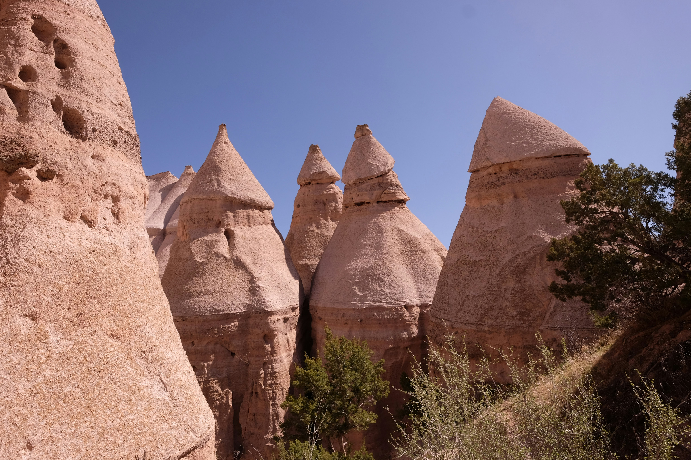
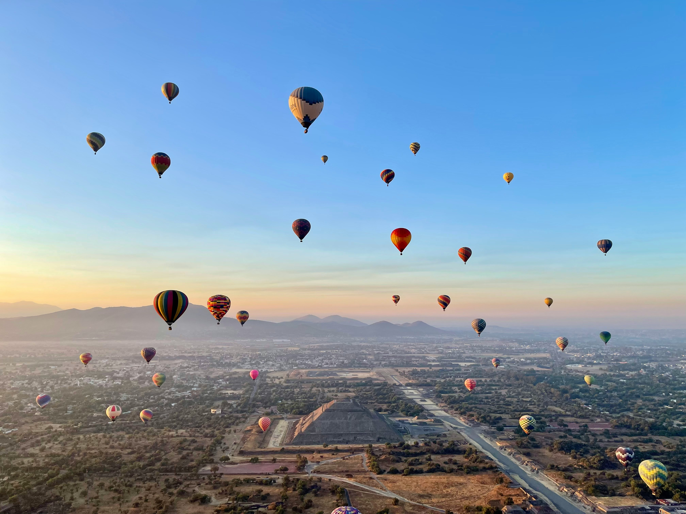
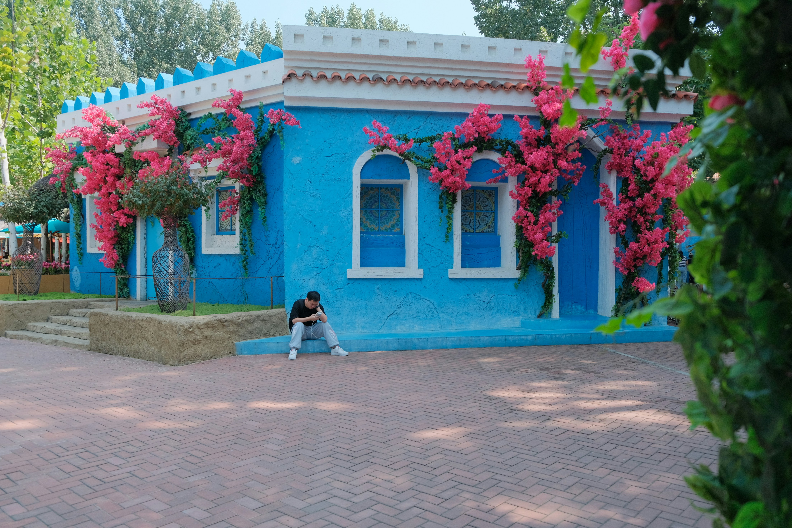
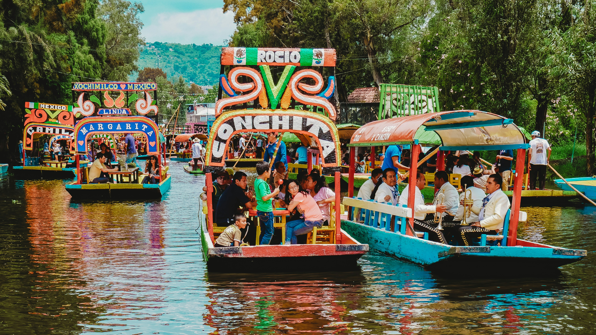

visit Mexico City and enjoy the trip

Teotihuacan, meaning "the place where the gods were created," stands as one of the most impressive ancient cities in the Americas. Located an hour northeast of Mexico City, this UNESCO World Heritage site was once the largest city in the pre-Columbian Americas, home to over 100,000 people around 450 AD. The Pyramid of the Sun rises 216 feet, making it the third-largest pyramid in the world, while the Pyramid of the Moon anchors the northern end of the Avenue of the Dead, the main thoroughfare stretching over a mile through the ceremonial complex.
Climb the steep steps to the pyramid summits for panoramic views across the ancient city and surrounding mountains - a challenging but rewarding experience that connects you with civilizations that mysteriously collapsed centuries before the Aztecs arrived. The site includes the Temple of the Feathered Serpent with intricate stone carvings of serpent heads, residential compounds with original murals, and a museum displaying artifacts found during excavations. Arrive early to beat crowds and heat, bringing water, sunscreen, and a hat as shade is limited. Hot air balloon rides at sunrise offer magical aerial views floating over the pyramids as golden light illuminates the ancient stones, creating an unforgettable perspective on this archaeological wonder.

The Casa Azul (Blue House) in Coyoacán neighborhood was Frida Kahlo's birthplace, childhood home, and the residence she shared with muralist Diego Rivera. Now a museum, the cobalt blue walls surround courtyards filled with pre-Hispanic sculptures, tropical plants, and personal items revealing intimate details of Frida's life. Her studio remains as she left it, with wheelchair at the easel, paint palettes, and unfinished works. Her bedroom displays the mirror-backed bed canopy where she painted self-portraits during recovery from her devastating bus accident.
The museum showcases Frida's iconic Mexican traditional dresses, jewelry, and the corsets she wore due to her injuries. Personal letters, photographs, and the kitchen where she entertained revolutionaries, artists, and intellectuals provide insights into her tumultuous relationship with Diego and her role in Mexican cultural identity. Book tickets online weeks in advance as daily visitor numbers are limited. The surrounding Coyoacán neighborhood enchants with colonial architecture, Plaza Hidalgo's weekend markets and street performers, and cafes where locals gather. Visit the nearby Diego Rivera Anahuacalli Museum, a Aztec-inspired pyramid he built to house his pre-Columbian art collection, and explore the colorful streets where Frida and Diego walked, creating their revolutionary art.

Xochimilco preserves the last remnants of the vast lake and canal system that once covered the Valley of Mexico when the Aztecs founded Tenochtitlan. Colorful trajinera boats, decorated with flowers and arched roofs bearing women's names, pole through narrow canals between chinampas - the ancient "floating gardens" where farmers still grow flowers and vegetables using pre-Hispanic agricultural techniques. This UNESCO World Heritage site offers a festive, uniquely Mexican experience as mariachi bands float by offering serenades, vendors sell food and drinks from passing boats, and families celebrate on the water.
Weekend afternoons transform the canals into floating parties with music, laughter, and the aroma of grilled meats drifting across the water. Hire a trajinera for your group (they hold 15-20 people), bring snacks and drinks, or purchase from floating vendors including micheladas (beer cocktails), tamales, elotes (grilled corn), and fresh flowers. The canals wind through neighborhoods where life continues much as it has for centuries, though tourism has brought both preservation and challenges. Visit the Island of the Dolls (Isla de las Muñecas), a eerie site where thousands of deteriorating dolls hang from trees, placed by a former caretaker who believed they warded off evil spirits. For a more tranquil experience, visit early morning when locals commute by boat and the canals reveal their authentic character before tourist crowds arrive.